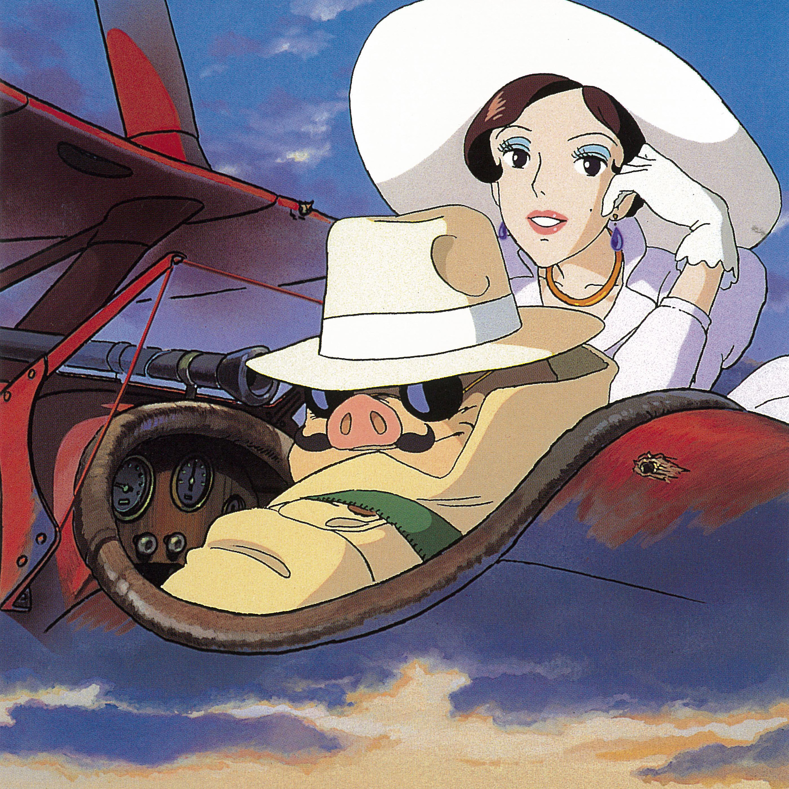

Day 44

加藤登紀子 - 時には昔の話を - 紅の豚 サウンドトラック
加藤登紀子声音温柔厚重，有成熟女性之风韵，小女生轻飘飘的声音根本比不上www 我没过过苦日子，年纪也不大，没有太多回忆往昔的感觉，但听着歌曲倒是有点感受到加藤登紀子对过去的情感和回忆了。看维基百科上说，加藤登紀子也参加过学运，歌词描述的就是那时候的事吧，果然歌词也有勇气和激情。
歌词翻译似乎是“莎士比亚书店”。感谢www
时には昔の话をしようか 偶尔也说说昔日吧 通いなれた なじみのあの店 那家经常去的店 マロニエの并木が窓辺に见えてた 窗边可以看到高大的路树 コーヒーを一杯で一日 一杯咖啡度过一日 见えない明日を むやみにさがして 盲目追寻着无法预知的明天 谁もが希望をたくした 每个人都怀抱希望 ゆれていた时代の热い风にふかれて 动荡时代的热风正吹袭着 体中で瞬间を感じた そうだね 是啊，身体瞬间感受到它 道端で眠ったこともあったね 曾在街头睡过吧 どこにも行けない みんなで 哪里也去不成，每个人 お金はなくても なんとか生きてた 一贫如洗却也活下来 贫しさが明日を运んだ 让贫穷迎来了明天 小さな下宿屋にいく人もおしかけ 小小客栈挤满了流浪的人 朝まで騒いで眠った 喧闹到天明然后入睡 岚のように毎日が燃えていた 每天都像风暴一样燃烧着 息がきれるまで走った そうだね 是的，直到咽下最后的气息 一枚残った写真をごらんよ 看看仅剩的那一张照片 ひげづらの男は君だね 满脸胡须的男人是你吧 どこにいるのか今ではわからない 不知道你现在何方 友达もいく人かいるけど 朋友中已经有人先走了 あの日のすべてが空しいものだと 往日的一切都已成空 それは谁にも言えない 然而对谁也不想说 今でも同じように见果てぬ梦を描いて 到今天仍然怀抱无尽梦想 走りつづけているよね どこかで 不管去哪里， 只知道前进没有止息
（手动TAB对齐累死orz